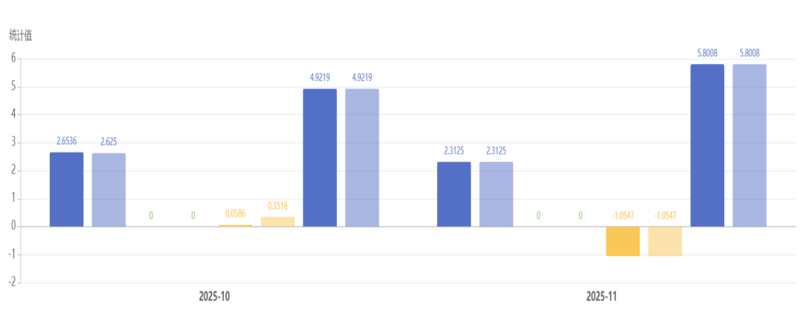
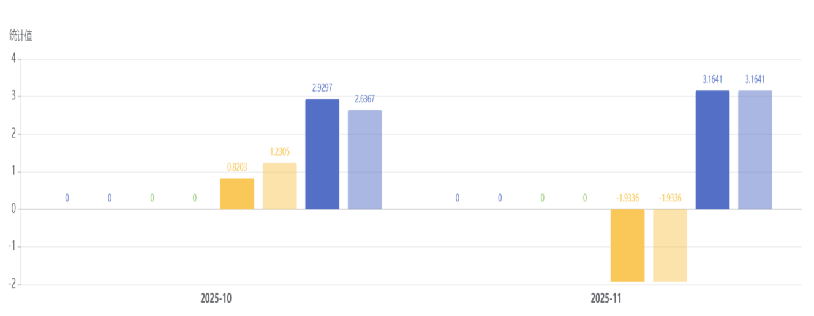

CZ
中国南方航空飞行员个人技术能力分析报告
QAR运行品质分析 · EBT训练与胜任力分析
检查通过率100%2项检查全部通过
QAR异常事件0起飞与着陆暂无异常记录
起飞抬轮变化率2.568°/s，稳定性良好
着陆接地姿态2.988°符合稳定接地表现
QAR运行品质分析
起飞 · 着陆 · 群体对比起飞阶段
抬轮速率均值 2.5684°/s，标准差 0.2410°/s，整体稳定。航向偏差字段存在缺失，需核查QAR参数采集。
着陆阶段
着陆坡度最大值标准差 2.0618°，提示侧风或横侧向修正中存在离散性。接地姿态均值 2.9883°。
个人与群体
当前对比项均标记为正常。离地俯仰角较群体低 15.62%，表现为相对柔和的抬轮倾向。
起飞阶段月度指标
近6个月
着陆阶段月度指标
近6个月
个人与群体QAR指标对比
5项均正常| 指标 | 个人均值 | 群体均值 | 偏差 | 状态 |
|---|---|---|---|---|
| 起飞抬轮变化率 | 2.5684 | 2.4354 | 5.46% | 正常 |
| 起飞坡度 | -0.2197 | -0.3062 | -28.24% | 正常 |
| 离地俯仰角 | 5.1416 | 6.0936 | -15.62% | 正常 |
| 着陆坡度最大值 | 0.1318 | -0.1849 | -171.3% | 正常 |
| 着陆接地姿态 | 2.9883 | 3.3902 | -11.85% | 正常 |
EBT训练与胜任力分析
检查通过 · 胜任力画像 · OB表现100%检查通过率
训练概况
统计期内完成2次检查类科目，均通过。暂无训练类科目数据，当前周期以资格认证与保持为主。
知识应用
00
程序应用
+30
沟通
+2-2
人工航径管理
0-5
问题解决与决策
+10
情景意识
+20
工作负荷管理
+10
胜任力判断
优势体现在程序应用和情景意识；人工航径管理负向记录较集中，沟通维度正负向并存，后续需结合运行情景持续观察。
负向OB TOP5
FPM.2监控并识别与预计飞行航径的偏差，并采取适当措施2FPM.3使用飞机姿态、速度和推力之间的关系2COM.2恰当选择沟通的内容、时机、方式和对象1COM.7适当升级沟通以解决已发现的偏差1FPM.1根据情况准确、平稳地人工控制飞机1正向OB TOP5
PRO.2及时应用相关的运行规定、程序和技术2COM.3清晰、准确、简洁地传递信息1COM.9遵守标准的无线电通话用语和程序1PRO.3遵循SOP，除非更高安全性指示需适当偏离1SAW.4验证信息准确性并检查过失误差1QAR × EBT 个性化训练闭环
下一周期建议侧风着陆训练
围绕着陆坡度最大值离散性，强化横侧向修正、稳定进近和接地前姿态保持。
人工航径管理
将FPM负向OB与QAR航迹/姿态指标联动复盘，关注偏差识别和修正动作。
沟通闭环
训练复杂情景中的沟通对象、时机、内容和偏差升级，提升CRM协作质量。
数据质量复核
对航向偏差、俯仰变化率等缺失字段建立月度校验，保障QAR趋势判断可靠。